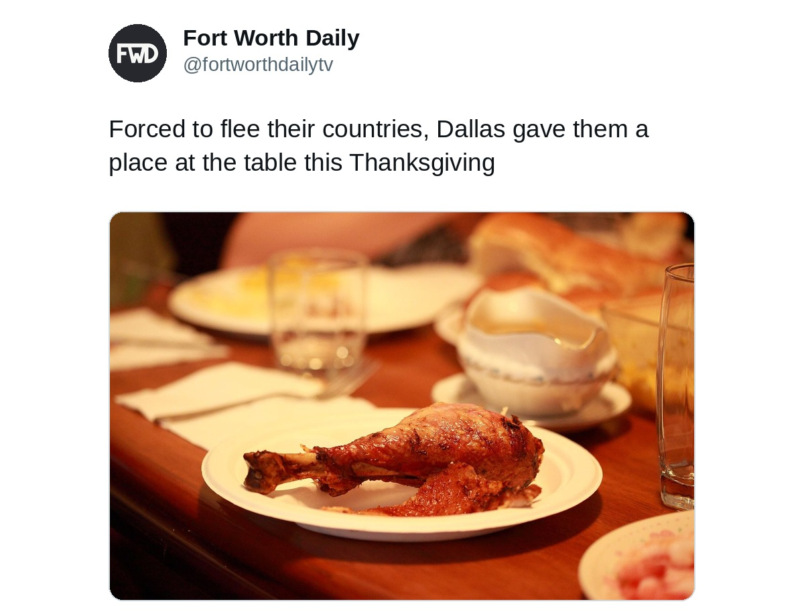

WATCH: Cowboy Santa arrives to the Fort Worth Stockyards
Santa shares a holiday message promoting kindness and enjoyment during the Christmas season, urging people to remember the reason for this special time of year.
Video: WFAA on YouTube
🔗 Link post: Facebook will render the outlet's own preview photo
https://www.youtube.com/watch?v=Vu5KLVttBdM
👍 ❤️ 😮 ✅ written to disk (dry run)
story + scoring
{
"source": "WFAA",
"kind": "video",
"score": 0.9628,
"relevance": 4,
"url": "https://www.youtube.com/watch?v=Vu5KLVttBdM",
"image_license": null,
"image_credit": null
}Jerry Jones says he still believes Brian Schottenheimer is the right coach for the Dallas Cowboys.
👍 ❤️ 😮 ✅ written to disk (dry run)
story + scoring
{
"source": "WFAA Sports",
"kind": "rss",
"score": 1.0316,
"relevance": 2,
"url": "https://www.wfaa.com/article/sports/nfl/cowboys/jerry-jones-says-he-still-believes-in-brian-schottenheimer-despite-mounting-meltdowns-by-cowboys/616-4bc2b56a-1669-49a4-a4f1-7387d2e1e724",
"image_license": "card",
"image_credit": "Card: FWD"
}For 16 years, a Dallas couple and their ministry have welcomed hundreds of refugees from around the world to the Thanksgiving table.

👍 ❤️ 😮 ✅ written to disk (dry run)
story + scoring
{
"source": "WFAA",
"kind": "rss",
"score": 0.0775,
"relevance": 2,
"url": "https://www.wfaa.com/article/life/heartwarming/forced-to-flee-their-countries-dallas-gave-them-a-place-at-the-table-this-thanksgiving/287-943ef796-4aed-46a9-91bf-0c731bc4ba18",
"image_license": "wikimedia-cc",
"image_credit": "Photo: Pink Sherbet Photography from USA via Wikimedia Commons (CC BY 2.0)"
}